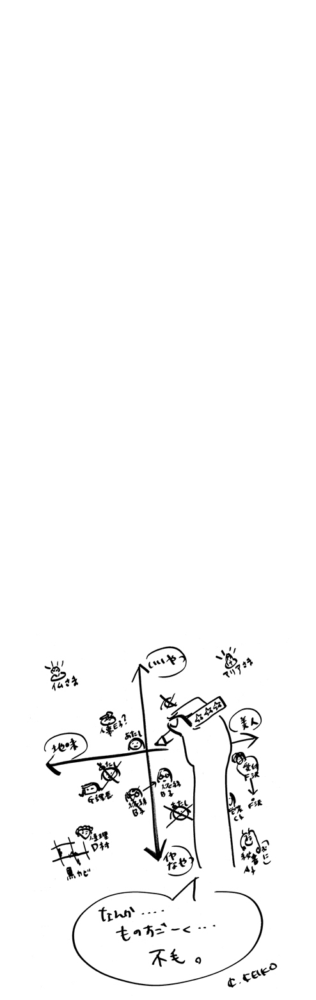
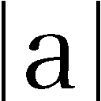

はじめに

どうも最近、比べっこに夢中の人が多い気がするのです。「この人、同い歳なのに肌がきれい」「私よりいい服着てるな」程度で収まっていればいいけれど、それを自分の格付けにしてしまうとしんどいですよね。誰が一番で自分はどの辺か、つい比べてしまう自動格付け機能が内蔵されているみたいで、苦しくなることもあるでしょう。
学校だってそうでした。華やかなのは一軍、それ以外は二軍……誰もはっきり口にはしないけど、そんな棲み分けが確かにありました。なんて疲れる世界だったんだろう。だけど私たち、ちゃんと卒業できたのかな。大人になっても、変わってない気がします。
女子会やママ友集まりでは、仲良く談笑しながら常にランクの入れ替えや競り合いが行われています。レースに参加したくないと思っても、ランキングの勝者たちに一方的に「負け組」扱いされると納得いかなくて、つい意識してしまうことも。
人はなぜ群れるのでしょう。仕切り屋さんはどこにでもいるもので、保育園のお母さん同士でも「親交を深めましょう！」なんて盛んにお呼びがかかります。一度参加してしまったら最後、次からは欠席するのにいちいち理由を考えなくてはなりません。もちろん、気持ちよく欠席できる空気を作ってくれる仕切り屋さんならいいのですが……。
女子会だって油断なりません。人目のあるところではみんなで写メを撮ったりしていますが、実は仲が悪かったり、気を抜くと声が2オクターブ低くなったり。そんな現場を目撃してしまったことがあります。あれはショックだったなあ。
私も38年ほど女をやっていますが、30代は何だか苦しそうな人が多い気がします。20代ではなくなった焦りとか、結婚とか出産とか仕事とか、変化の多いお年頃。仲の良かった友達ともいろんな差が出てきて、「私、出遅れてるかも」なんて悩みがちです。だけど比べっこはキリがない。他人と比較するのではなくて、手持ちの自分に地道に手入れをすればいいんだと思います。
初めは野山だったところに鍬を入れて、台風が来たり日照りが続いたりするたびに、また一からやり直し。だけどその積み重ねで、だんだん畑との付き合い方がわかってくる。自分との付き合いも、多分そんな感じでいいんだと思います。
他人との比較で自分を計ると、頭にはいつもプラスかマイナスがくっついています。そんなの、取っちゃえばいいと思う。-aに仕切りを立てると、つまり絶対値。人並みよりも足りない私でも、比べなければ、ほら、堂々と自分の顔で立っている。みんな、絶対値で生きよう。一緒にさ。そんなコラムにしたくて、「絶対☆女子」とつけました。